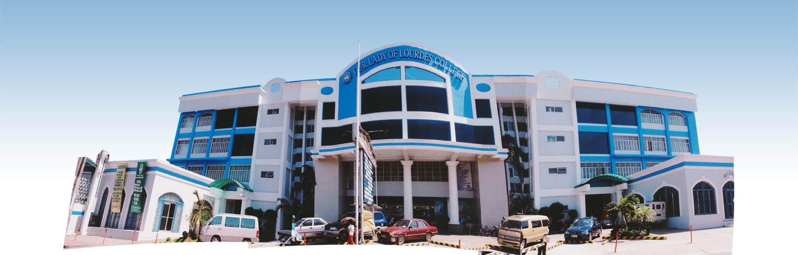

Our Lady of Lourdes College (OLLC) is a private school in Valenzuela City. It started out in 1986 as the Cherub Learning Center, founded by Mr. and Dr. Alfredo Demetillo. By the following year, the school opened its elementary department.
In 1993, the institution began accommodating high school students, and the next year, it began offering programs for college-level students.
With its mission of providing educational opportunities to the youth, OLLC has facilities that aid students in their learning, like an Instructional Media Center, an HRM laboratory, a HELE Practice House, and laboratories.
OLLC currently offers bachelor's degree programs in Criminology, Business Administration, Hospitality Management, Teacher Education, and Information Technology. The basic education department includes a Senior High School (SHS) program providing the Academic and the Technical-Vocational-Livelihood (TVL) tracks. Additionally, the school offers various TVET courses, like Bartending, Cookery, and Housekeeping, for those interested in training for certain skills and earning their National Certificate (NC). Our Lady of Lourdes College and its programs are duly recognized by the Department of Education (DepEd), the Commission on Higher Education (CHED), and the Technical Education and Skills Development Authority (TESDA).
Contact Details
5031 Gen. T. De Leon St., Valenzuela City, 1442 Metro Manila
(02)293-9327
ollc_informationtechnology@yahoo.com
FB Page: OLLC Valenzuela